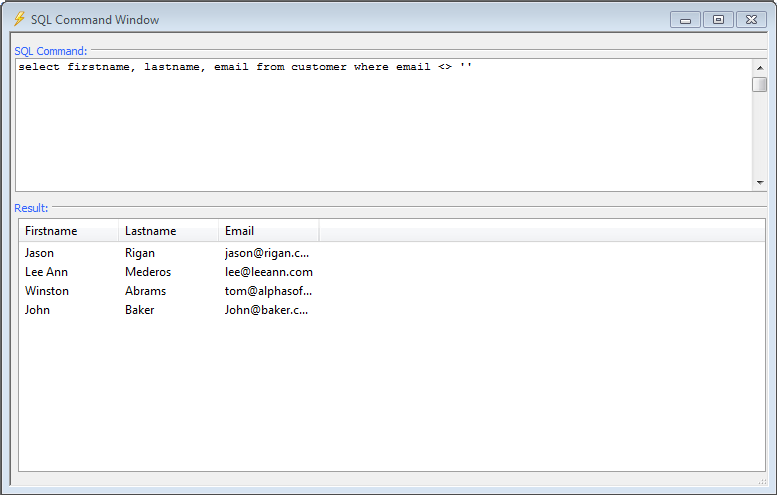

SQL Command Window
The SQL Command Window provides a mechanism for testing SQL statements. There are several ways to open the SQL Command Window:
|

Open SQL Command Window from Database Explorer

SQL Command Window
The SQL Command Window requires that you have defined one or more named connection strings.
Select a named connection string from the Connection list.
Select the SQL Type you wish to use. The options are:
"Portable" - use the multi-database Portable SQL dialect
"Native" - use the dialect specific to a database product
Enter SQL in the SQL Command window.
If you need to insert a table or column name into a SQL statement:
Click Insert... to display the Database Explorer.
Select the item and click Insert.
Click
 Execute SQL to run the SQL statement.
Execute SQL to run the SQL statement.If the statement was a SELECT statement, you will see a sample of records in the Result window.
If the statement was an INPUT, DELETE, or UPDATE statement, you will see the number of affected rows reported in the Result window.
If you executed another type of SQL command, the Result window will show a success or failure message.
If the statement could not be processed by the back-end database (for example, because of invalid SQL syntax), you will see an error message in the Result window.
You may revert to previous versions of your SQL statement:
Click SQL History to display the SQL History dialog.
Select a previous statement (from this session).
Click Select.
Click to clear the SQL Command window.
Click to display the Connections dialog, where you can edit or create connection strings.
See Also